生成时间：2026-06-08T11:11:06+08:00
今日保留论文数：3
内容构成：今日新文 3 篇；补充推荐 0 篇；经典旧文精读 0 篇
高能天体物理重点
1. LHAASO J1849$-$0002: A Hybrid Lepto-Hadronic Interpretation of PeV Gamma-Ray Emission
- 来源：arXiv / astro-ph.HE
- 链接：https://arxiv.org/abs/2606.06974v1
- 作者：Yihan Shi, Yudong Cui, Lili Yang
- 评分：novelty 8/10，importance 8/10，relevance 10/10，final 9.70/10
- 推荐理由：Directly addresses LHAASO PeV gamma-ray emission from a PWN, PeVatron physics, lepto-hadronic modeling, suppressed diffusion, and associated neutrino flux; this is a high-priority gamma-ray/cosmic-ray paper.
中文题目：LHAASO J1849−0002：对 PeV 伽马射线辐射的轻子—强子混合解释
做了什么：这篇论文讨论 LHAASO 在脉冲星风云 J1849−0001 方向探测到延伸至约 \(2\,\mathrm{PeV}\) 的超高能伽马射线后，粒子加速和辐射机制该如何解释。作者比较了纯轻子模型、强子主导模型和轻子—强子混合模型：单靠电子逆康普顿辐射需要过高的电子截断能量，单靠质子与气体碰撞又难以补足最高能端。论文因此提出，脉冲星风云电子贡献多波段和部分 TeV 伽马射线，而逃逸宇宙线质子与附近分子云相互作用产生 PeV 尾部；这要求源区附近扩散系数被压低到银河系平均值约 \(1\%\)。
为什么重要：如果 \(2\,\mathrm{PeV}\) 伽马射线确实来自该系统，就意味着母粒子能量至少达到数 PeV，甚至更高。这直接触及银河系 PeVatron 的核心问题：银河系内哪些天体能把粒子加速到膝区附近。论文的重要性不只在于给一个源做谱拟合，而在于把脉冲星风云、逃逸宇宙线、分子云靶物质和抑制扩散放进同一个物理图像里，检验一个演化 PWN 是否能在复杂环境中表现为混合型 PeVatron。
理论 / 观测 / 仪器方法价值：对理论而言，这篇文章展示了单区纯轻子或纯强子解释在 PeV 尾部面前的典型困难，并把电子能损、质子逃逸和云团相互作用结合起来。对观测而言，它给出多波段 SED 和未来中微子可检验预言，强调 LHAASO 最高能点、分子云位置和气体密度是判别模型的关键。对方法而言，它提供了一个适合其他 LHAASO PeVatron 候选体的建模模板：先做纯模型压力测试，再引入空间环境和扩散约束。
为什么应该关注：如果你关注银河系宇宙线起源、PWN 演化、LHAASO 超高能源或中微子对应体，这篇文章值得看，因为它把一个看似“PWN 能否产 PeV 光子”的问题转化成了更可检验的环境问题：PeV 粒子是否能逃逸到附近分子云、是否被局域磁湍流困住、是否伴随可探测中微子。即使你不同意混合模型，论文中纯轻子和强子方案失败的原因也能帮助判断其他 PeV 源模型是否过度依赖不现实参数。
展开详细解读：文章讲解、背景、理论、重点章节、图表与相关工作
文章详细讲解
科学问题：LHAASO J1849−0002 的核心挑战是，如何解释从较低能段一直延伸到约 \(2\,\mathrm{PeV}\) 的伽马射线谱。该方向与脉冲星风云 J1849−0001 相关，PWN 通常很擅长通过高能电子的同步辐射和逆康普顿散射解释 X 射线到 TeV 伽马射线，但当光子能量进入 PeV 区间时，电子模型会遭遇 Klein–Nishina 抑制、快速冷却以及过高加速能量需求。另一方面，强子模型天然能通过 \(p p\) 碰撞产生 \(\pi^0\) 衰变伽马射线，但它需要足够高能的质子、足够密的靶气体和合适的空间重合。作者要回答的是：这个源到底是纯 PWN 电子源、纯强子云源，还是两者叠加的系统。
作者怎么做：论文构建并比较三类辐射模型。第一类是纯轻子模型，假定 PWN 中电子经过同步辐射和逆康普顿散射产生观测到的多波段 SED。第二类是强子主导模型，假定高能质子与周围气体碰撞产生 \(\pi^0\) 衰变伽马射线，并可能伴随带电介子衰变中微子。第三类是混合模型：PWN 内部电子解释低能到 TeV 区间的主要辐射，逃逸宇宙线质子扩散到附近分子云后通过 \(p p\) 相互作用补足最高能 PeV 尾部。模型中关键参数包括电子谱指数、电子截断能量、磁场强度、质子总能量、质子截断能量、云团密度、源—云距离以及扩散系数。
关键结果：纯轻子模型虽然可以拟合部分多波段 SED，但要解释约 \(2\,\mathrm{PeV}\) 光子，需要电子能量推到极端高的截断，且逆康普顿在高能端进入 Klein–Nishina 区后效率下降，因此物理上不自然。强子主导模型能够产生高能伽马射线，但如果仅用一个强子分量覆盖全谱，会在部分能段与观测不匹配，并且最高能端仍存在不足。混合模型表现最好：电子分量负责 PWN 常规辐射，质子—分子云分量负责 PeV 尾部。为了让 PeV 质子在源附近保持足够高密度，作者需要把局域扩散系数压低到银河系平均扩散的约 \(1\%\)，这与其他 TeV halo 或抑制扩散区的讨论相呼应。
局限和下一步：这类 SED 拟合存在明显的非唯一性。分子云质量、距离、三维几何、气体密度、背景扣除、LHAASO 最高能点的统计和系统误差都会影响强子分量的需求。纯轻子模型是否真的“不现实”也取决于对 PWN 年龄、磁场、加速极限和辐射场的假设。下一步最有力的检验不是再调 SED 参数，而是做空间形态和多信使验证：PeV 伽马射线是否更贴近分子云而非 X 射线 PWN，能谱是否随位置变化，中微子望远镜是否能在该方向累积到相容信号，以及更精细的 CO、HI、尘埃气体图能否支持所需靶物质。
背景知识
LHAASO 近年来发现了一批超过 \(100\,\mathrm{TeV}\) 甚至接近 PeV 的银河系伽马射线源，使“银河系 PeVatron”从一个理论问题变成了源表问题。由于 \(\gamma\) 射线能量 \(E_\gamma\) 通常低于母粒子能量，探测到 \(\mathrm{PeV}\) 量级光子意味着电子或质子必须达到更高能区间。对宇宙线起源而言，这正好对应银河系宇宙线能谱膝区附近的加速极限问题。
脉冲星风云是年轻或中年脉冲星注入相对论性电子正电子风后形成的非热辐射星云。典型 PWN 通过同步辐射产生射电到 X 射线，通过逆康普顿散射宇宙微波背景、红外和星光光子产生 GeV 到 TeV 伽马射线。因此，当一个 UHE 伽马源与 PWN 位置接近时，第一反应往往是尝试轻子模型。问题是，PeV 光子对 PWN 电子模型非常苛刻：高能电子冷却快，且逆康普顿散射在高能端不再保持 Thomson 极限的高效率。
强子模型的历史动机来自超新星遗迹和分子云相互作用。若质子被加速到 PeV，逃逸后进入附近高密度气体，就会通过非弹性 \(p p\) 碰撞产生中性和带电介子；中性介子给出伽马射线，带电介子给出中微子。这一机制的优点是高能端较自然，且有中微子预言；缺点是需要知道真实气体分布和宇宙线扩散历史，而这些通常比辐射谱本身更难确定。
现在值得重新看这类源，是因为 LHAASO 给出了过去 Cherenkov 阵列难以覆盖的 \(\gtrsim 100\,\mathrm{TeV}\) 连续谱和最高能光子信息。最高能端往往是模型判别能力最强的部分：一个在 \(1\text{--}10\,\mathrm{TeV}\) 看起来拟合良好的轻子模型，可能在 \(100\,\mathrm{TeV}\) 以上突然失败；一个普通强子模型如果缺少足够高的质子截断或靶密度，也会低估 PeV 尾部。
该领域常见误区有三点。第一，把空间位置相近等同于物理关联，但 PWN、分子云和伽马射线峰值可能只是投影接近。第二，把 PeV 光子直接等同于 PeV 质子；实际上产生 \(E_\gamma\sim 1\,\mathrm{PeV}\) 的质子通常要达到数 PeV 到十 PeV 量级。第三，把一个 SED 拟合成功当成机制确认；在缺少形态、时间演化和中微子约束时，轻子—强子分解通常有很强退化。
基础理论 / 方法脉络
最基本的物理图像是：非热粒子获得近似幂律能谱，然后在磁场、光子场或气体中辐射。电子在磁场中产生同步辐射，在背景光子场中通过逆康普顿散射产生高能伽马射线；质子本身辐射效率低，但与气体核子发生非弹性碰撞后可产生 \(\pi^0\)、\(\pi^+\) 和 \(\pi^-\)，其中 \(\pi^0\) 衰变给出伽马射线，带电介子链给出中微子。
对 PWN 来说，电子能谱通常写成幂律加指数截断或断裂幂律。磁场 \(B\) 控制同步辐射峰和冷却时间，背景辐射场能量密度控制逆康普顿亮度。若要让电子产生 PeV 伽马射线，所需电子 Lorentz 因子极高，同时散射可能进入 Klein–Nishina 区，导致截面和能量转移效率下降。这就是纯轻子模型在最高能端变得紧张的根源。
对强子分量来说，关键不是只有质子能否达到 PeV，还包括 PeV 质子是否能在源附近遇到足够多气体。如果宇宙线按银河系平均扩散系数快速扩散，那么经过 PWN 年龄尺度后，粒子密度会被摊薄，分子云处的 \(p p\) 伽马射线通量可能不够。论文提出的抑制扩散系数约为银河系平均值的 \(1\%\)，等价于源周围存在磁湍流增强、粒子被局域约束或扩散各向异性等物理条件。
观测和拟合逻辑上，多波段 SED 是把射电、X 射线、GeV、TeV 和 PeV 数据放在同一 \(\nu F_\nu\) 或 \(E^2 dN/dE\) 图上比较。轻子模型需要同时过同步和 IC 约束：不能只为了拟合 PeV 点而让 X 射线同步辐射超标。强子模型需要同时受气体密度、源距离和总能量约束：不能只靠任意增加质子能量来拟合，因为总能量可能超过脉冲星自转能或超新星能量预算。
常见退化包括 \(B\) 与电子总能量之间的退化、电子截断能量与辐射场温度之间的退化、气体密度与质子总能量之间的退化、源年龄与扩散系数之间的退化。系统误差则包括 LHAASO 最高能能标、扩展源背景估计、不同仪器孔径不一致、分子云距离二义性以及视线方向上无关气体的混入。理解这些退化比记住某个最佳拟合参数更重要。
公式与推导
第一步是写出非热粒子的注入或现存能谱。对电子或质子 \(i\in\{e,p\}\)，常用形式为
其中 \(N_{0,i}\) 是归一化，\(s_i\) 是谱指数，\(E_{\mathrm{cut},i}\) 是截断能量，\(E_{0,i}\) 是参考能量。这个式子是 SED 拟合的入口：纯轻子模型主要调 \(N_{0,e}\)、\(s_e\)、\(E_{\mathrm{cut},e}\) 和 \(B\)，强子分量主要调 \(N_{0,p}\)、\(s_p\)、\(E_{\mathrm{cut},p}\) 和气体密度。
第二步是能量预算。粒子总能量为
其中 \(W_i\) 要与脉冲星自转能、PWN 演化能量或超新星爆炸能量相容。若拟合需要 \(W_p\) 或 \(W_e\) 过大，即使谱形看起来好，也会在物理上变得可疑。
第三步是电子同步辐射的特征频率。Lorentz 因子为 \(\gamma_e=E_e/(m_e c^2)\) 的电子在磁场 \(B\) 中的特征频率近似为
其中 \(e\) 是电荷量，\(m_e\) 是电子质量，\(c\) 是光速。该式说明，提高 \(E_e\) 或 \(B\) 都会把同步辐射推向 X 射线，因此用高 \(E_{\mathrm{cut},e}\) 拟合 PeV 伽马射线时必须检查 X 射线是否超标。
第四步是逆康普顿散射在 Thomson 极限下的能量标度：
其中 \(\epsilon_{\mathrm{ph}}\) 是种子光子能量。该关系只在 \(4\gamma_e\epsilon_{\mathrm{ph}}\ll m_e c^2\) 时成立；当
时进入 Klein–Nishina 区，散射截面下降，IC 辐射不再按简单的 \(\gamma_e^2\) 增长。这是纯轻子解释 PeV 尾部的关键障碍。
第五步是电子冷却。同步与 IC 的辐射损失可写成
其中 \(\sigma_T\) 是 Thomson 截面，\(U_B=B^2/(8\pi)\) 是磁场能量密度，\(U_{\mathrm{rad}}\) 是辐射场能量密度。冷却时间为
若 \(t_{\mathrm{cool}}\) 远短于源龄，仍需大量 PeV 电子存在，就要求持续高效注入或非常特殊的低磁场环境。
第六步是强子 \(p p\) 相互作用的伽马射线发射率。简化地，单位体积伽马射线产生率可写成
其中 \(n_{\mathrm{gas}}\) 是气体数密度，\(\sigma_{pp}\) 是非弹性 \(p p\) 截面，\(F_\gamma\) 描述单个质子碰撞产生伽马射线的能量分布。这个式子说明强子通量与气体密度和质子密度近似成正比。
第七步是源到地球的通量转换：
其中 \(d\) 是源距离，积分覆盖发射体积。若采用分子云作为靶，云质量、距离和三维位置都会进入该积分；投影重合不等于 \(dV\) 积分中真实重合。
第八步是逃逸质子的扩散。点源瞬时注入的近似解为
其中 \(Q_p(E)\) 是注入谱，\(D(E)\) 是扩散系数，\(r\) 是源到云的距离，\(t\) 是传播时间。论文要求 \(D(E)\) 相比银河系平均值显著降低，本质上是为了让指数项不过小、归一化不被扩散体积稀释。
第九步是常用扩散系数标度：
其中 \(D_0\) 是银河系平均扩散归一化，\(\delta\) 是能量依赖指数，\(\chi\) 是抑制因子。本文混合模型中 \(\chi\sim 0.01\) 的含义是源区附近扩散约为平均银河环境的 \(1\%\)，这是模型最有辨识度的物理要求之一。
第十步是拟合诊断。若各能段观测通量为 \(F_j\)，误差为 \(\sigma_j\)，模型为 \(M_j(\boldsymbol{\theta})\)，可用近似卡方
评估拟合优度，其中 \(\boldsymbol{\theta}\) 表示所有模型参数。实际高能计数分析更常用 Poisson 似然，但这个式子能直观看出：最高能 PeV 点虽然数量少，却可能因模型差异大而强烈影响机制判断。
模型拟合 / 应用方法
这篇文章的拟合对象是多波段 SED，而不是单一能段的谱指数。纯轻子模型需要同时拟合 PWN 的同步辐射和 IC 辐射，因此参数包括电子谱归一化、谱指数、截断能量、磁场强度和背景辐射场。拟合时应重点看两类残差：一是 X 射线能段是否被高能电子同步辐射过度抬高，二是 \(\gtrsim 100\,\mathrm{TeV}\) 到 PeV 区间是否因 Klein–Nishina 抑制而显著低于 LHAASO 数据。
强子主导模型的拟合量包括质子谱、质子总能量、截断能量、气体密度和源距离。该模型容易出现 \(W_p n_{\mathrm{gas}}/d^2\) 型退化：提高气体密度、提高质子总能量或降低距离都能增加通量。因此只看 SED 无法唯一决定 \(W_p\) 和 \(n_{\mathrm{gas}}\)，必须结合 CO、HI、尘埃消光和速度距离信息。若模型低估最高能点，可能意味着质子截断不够高、扩散稀释过强，或 PeV 点统计波动尚未稳定。
混合模型的参数更多，但物理分工更清楚：轻子分量解释 PWN 常规宽带辐射，强子分量解释 PeV 尾部。拟合时最重要的不是让总曲线穿过所有点，而是检查两个分量交接是否自然。如果电子分量和强子分量在同一能段都可任意调整，模型自由度会过高；比较有说服力的情况是，X 射线和 TeV 以下数据强约束电子分量，而 PeV 数据独立要求强子分量。
似然或卡方统计之外，系统误差应被显式考虑。LHAASO 的能量刻度、扩展源模板、背景估计和源混淆会改变最高能端谱形；不同仪器的角分辨率和积分区域不同，会使 SED 拼接出现归一化偏差。对强子模型而言，云团距离二义性和线-of-sight 气体混合是主要外部系统误差。对轻子模型而言，红外和星光辐射场模型、PWN 年龄和磁场空间非均匀性是主要系统误差。
模型可能失败的场景包括：未来数据发现 PeV 发射形态严格跟随紧凑 X 射线 PWN 而非分子云，则强子云相互作用图像会受压；若中微子上限显著低于混合模型预言，则强子分量会被削弱；若更高统计的伽马射线谱在 PeV 前出现急剧截断，则当前最高能尾部可能不需要强子补充。反过来，如果 PeV 伽马射线与高密度气体空间相关，并且存在相容中微子趋势，混合模型将比纯轻子模型更有优势。
重点章节 / 结果段落怎么读
数据和源环境部分应首先阅读。重点看 LHAASO J1849−0002 与 PWN J1849−0001、附近分子云、其他 TeV 或 GeV 源的相对位置。读者应确认论文采用了哪些多波段数据点、是否区分了不同仪器的积分区域，以及分子云参数来自何种气体示踪。
纯轻子模型部分是判断 PWN 解释压力的关键。这里应关注作者采用的电子谱形式、磁场强度、辐射场设置和电子截断能量。不要只看总曲线是否能到达 PeV，而要检查该模型是否违反 X 射线约束、是否需要过高的 \(E_{\mathrm{cut},e}\)，以及 IC 计算是否包含 Klein–Nishina 效应。
强子主导模型部分应当从能量预算和最高能端残差两方面读。看作者假设的质子谱是否能延伸到足够高能、所需 \(W_p\) 是否合理、气体密度和云质量是否有观测支撑。如果强子模型在全谱上不佳，需区分是低能段过量、TeV 段形状不对，还是 PeV 尾部不足。
混合模型部分是论文主张所在。读者应检查轻子和强子分量各自负责的能段、分量交接是否自然、抑制扩散系数 \(\chi\sim 0.01\) 的必要性来自哪里。还应留意作者是否测试了源—云距离、年龄和扩散指数变化对结论的影响。
中微子预言和讨论部分提供独立可检验性。重点不是当前是否已经探测到中微子，而是模型预测通量与 NEON 或其他中微子实验灵敏度之间的距离、积分时间需求以及能区重叠。若中微子预言过低，强子模型虽可解释伽马射线但短期难验证；若接近灵敏度，则该源具有多信使优先级。
建议重点查看的图表
-
多波段 SED 总图：检查射电、X 射线、GeV、TeV 和 LHAASO PeV 点是否来自一致孔径；重点看纯轻子、强子和混合模型在 \(\gtrsim 100\,\mathrm{TeV}\) 的分歧。
-
纯轻子模型分量图：看同步辐射曲线是否穿过或超过 X 射线数据，IC 分量在高能端是否因 Klein–Nishina 效应变陡，以及所需电子截断是否极端。
-
强子模型 SED 或残差图：看 \(\pi^0\) 衰变分量是否能覆盖 PeV 尾部，在哪些能段偏离最大，以及调高质子截断或归一化是否会破坏其他能段。
-
混合模型分解图：确认电子 IC 与强子 \(p p\) 分量的交接能量，判断最高能光子是否确实主要由强子分量承担，而不是两个高度退化分量的任意相加。
-
源区环境或分子云位置图：看 LHAASO 扩展辐射、PWN、分子云和可能的其他源是否空间相关；注意投影相关与三维接触不是一回事。
-
扩散系数或源—云距离参数扫描：若论文给出，重点看 \(\chi\) 与 \(W_p\)、\(n_{\mathrm{gas}}\)、年龄之间的置信区间和退化方向。
-
中微子通量与灵敏度图：看预测的 \(E_\nu^2\phi_\nu\) 曲线与 NEON 灵敏度在哪个能区最接近，以及是否存在已有限制排除强子分量的可能。
关键图表逐图导读
图 1：通常应是源区多波段或空间环境图。横纵坐标可能是赤经和赤纬，叠加 LHAASO 伽马射线显著性或通量等值线、PWN 位置、分子云示踪强度。读图时要看 PeV 发射峰值是否与 PWN 重合，还是偏向气体结构；陷阱是二维投影不能证明 PeV 质子真的进入了云。
图 2：多波段 SED 与纯轻子模型。横轴一般是光子能量或频率，纵轴是 \(E^2 dN/dE\) 或 \(\nu F_\nu\)。数据点来自不同仪器，模型线包括同步辐射和 IC 分量。关键结论是纯轻子模型能否同时过 X 射线和 PeV 点；读图陷阱是忽略不同数据点的孔径和系统误差，把拼接谱当作同一物理区域的完美谱。
图 3：强子主导模型拟合。横轴仍为能量，纵轴为能量通量，模型线通常是 \(\pi^0\) 衰变伽马射线。应看模型在 TeV 到 PeV 的曲率是否与数据一致，以及最高能点是否系统性高于模型。陷阱是仅通过提高 \(W_p\) 改善 PeV 端，却导致 GeV 或 TeV 端过量。
图 4：混合模型总 SED。模型线应分为电子同步、电子 IC、强子 \(p p\) 以及总和。读者要看电子分量是否由低能观测约束，强子分量是否主要在最高能端出现，而不是全能段随意补偿。若总曲线明显优于两种纯模型，说明混合解释在谱形上有优势，但仍不能单独证明空间关联。
图 5：扩散或参数敏感性诊断。横轴可能是扩散抑制因子 \(\chi\)、源—云距离、年龄或粒子能量，纵轴可能是预测通量或所需质子能量。重点看 \(\chi\sim 0.01\) 是否是窄范围要求，还是可被其他参数轻易替代。读图陷阱是把抑制扩散当作已观测事实；它通常是模型为了保持局域宇宙线密度而推出的条件。
图 6：中微子预言图。横轴是中微子能量 \(E_\nu\)，纵轴是 \(E_\nu^2\phi_\nu\) 或积分灵敏度，模型曲线与 NEON 灵敏度线比较。关键看预测峰值能区和实验最佳灵敏度是否重叠；陷阱是把接近灵敏度理解为已经可探测，实际还取决于曝光时间、角分辨率和背景。
论文原图 / 可嵌入图片
Fig04
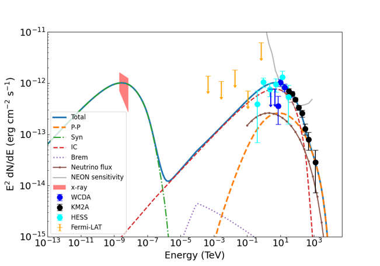
图注：Energy spectrum of PSR J1849-0001 with hybrid model. The labeled data is the same as in Fig. \(\ref{fig2}.\) The orange long-dashed, green dash-dotted, red dashed and purple dotted lines are representing $pp$ interaction, synchrotron, IC and bremsstrahlung respectively and the blue solid line is the total radiation. The brown solid line with dot is the single flavor neutrino flux and the gray line is NEON sensitivity to this source.
对应解读：对应“建议重点查看的图表”中的混合模型分解图与中微子通量灵敏度图，以及“关键图表逐图导读”的图4和图6内容。
入选理由：这是论文核心结论图：同时展示混合模型 SED、电子同步/IC/轫致辐射、强子 pp 分量、总辐射曲线，并叠加单味中微子通量和 NEON 灵敏度。它最直接检验日报强调的关键问题：PeV 尾部是否由强子分量承担、电子分量与强子分量的交接是否自然，以及中微子预言是否接近实验灵敏度。
来源与置信度：\(arxiv_source\)；high；\(arxiv_source\) / aa-v1.tex:figure[4]
Fig01
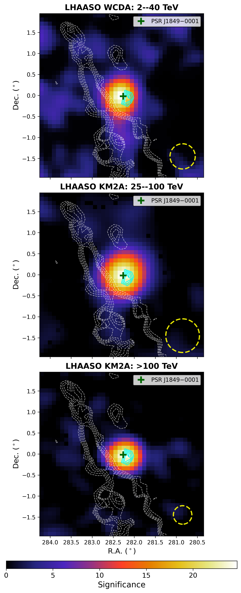
图注：The significance map of LHAASO J1849-0002. Top panel: WCDA map with energy in $2 - 20 $ TeV. Middle panel: KM2A map with energy $25 - 100$ TeV. Bottom panel: KM2A map with energy $> 100$ TeV. The darkgreen cross marks the position of the PSR J1849-0001. The white dashed lines are significance contours of the molecular clouds from 3.5 K to 12.5 K, in steps of 1.5 K, with integration speed ranging from $+94.9 \, \text{km s}^{-1}$ to $+101.4 \, \text{km s}^{-1}$, here we use cyan lines to represent the core Cloud. The yellow dashed circles in each panel represent the corresponding angular resolution (PSF) of the observations.
对应解读：对应“建议重点查看的图表”中的源区环境或分子云位置图，以及“关键图表逐图导读”的图1。
入选理由：该图给出 LHAASO J1849-0002 在不同能段的显著性空间分布，并叠加 PSR J1849-0001 位置、分子云等值线和各能段 PSF，是判断 PWN、PeV 伽马辐射与分子云是否空间相关的关键证据。它补充了 SED 拟合无法单独证明的环境关联问题。
来源与置信度：\(arxiv_source\)；high；\(arxiv_source\) / aa-v1.tex:figure[1]
Fig02
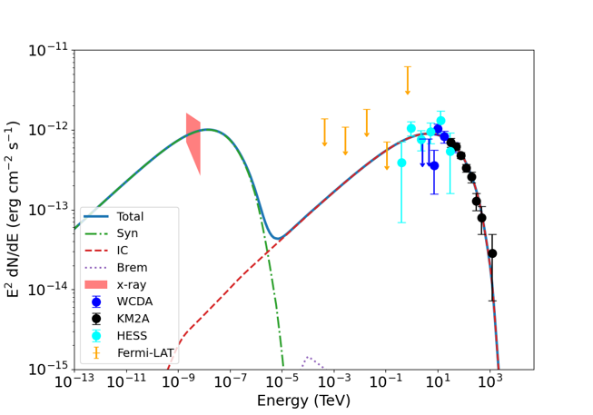
图注：Energy spectrum of PSR J1849-0001 modeled with the leptonic scenario. The shaded red region represents the X-ray flux measured by Chandra\citep{kim2024x}. Yellow upper limits are GeV gamma-ray flux upper limits of 95\% confidence level based on the Fermi-LAT data\citep{LHAASO2026J1849}. Cyan squares show the measurement of H.E.S.S. The blue and black circles show the LHAASO measurements. The green dash-dotted, red dashed and purple dotted lines are representing synchrotron, IC and bremsstrahlung respectively and the blue solid line is the total radiation.
对应解读：对应“建议重点查看的图表”中的纯轻子模型分量图，以及“关键图表逐图导读”的图2和模型拟合段落中关于 X 射线与 PeV 端残差的讨论。
入选理由：该图展示纯轻子情景下的多波段 SED，包含 Chandra X 射线、Fermi-LAT 上限、H.E.S.S.、LHAASO 数据以及同步、IC、轫致辐射和总曲线。它直接用于判断纯电子模型是否能同时通过 X 射线约束和 LHAASO PeV 点，尤其能体现 IC 高能端受 Klein–Nishina 抑制后的困难。
来源与置信度：\(arxiv_source\)；high；\(arxiv_source\) / aa-v1.tex:figure[2]
Fig03
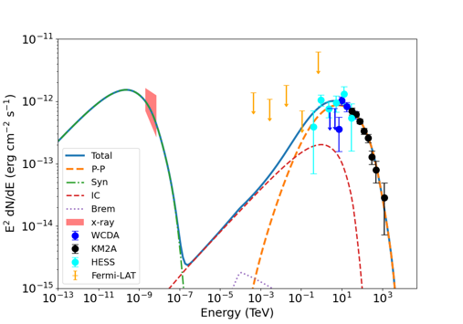
图注：Energy spectrum of PSR J1849-0001 modeled with the hadronic scenario. The labeled data is the same as in Fig. \(\ref{fig2}.\) The orange long-dashed, green dash-dotted, red dashed and purple dotted lines are representing $pp$ interaction, synchrotron, IC and bremsstrahlung respectively and the blue solid line is the total radiation.
对应解读：对应“建议重点查看的图表”中的强子模型 SED 或残差图，以及“关键图表逐图导读”的图3和强子主导模型拟合段落。
入选理由：该图展示强子主导情景下 pp 相互作用分量与其他辐射分量对多波段 SED 的拟合，是评估单一强子模型能否覆盖 TeV 到 PeV 谱形的主要依据。它可用于检查最高能 LHAASO 点是否仍被低估，以及提高强子归一化是否可能破坏其他能段拟合。
来源与置信度：\(arxiv_source\)；high；\(arxiv_source\) / aa-v1.tex:figure[3]
强相关工作
这篇工作与 LHAASO 对银河系超高能伽马源的系统发现直接相关，尤其是那些与 PWN、SNR 或分子云复合环境相联系的 PeVatron 候选体。可检索关键词包括“LHAASO PeVatron catalog”、“LHAASO J1849-0002”、“PWN PeV gamma ray”、“Galactic PeVatrons”和“ultra-high-energy gamma-ray sources”。相似工作通常会比较纯轻子 PWN 模型和强子云模型，并用最高能谱点、空间扩展和气体分布来判别。
基础理论方面，这篇论文站在两条传统线上：一条是 PWN 宽带辐射模型，关键词包括“pulsar wind nebula inverse Compton”、“Klein Nishina suppression PWN”和“PWN spectral energy distribution”；另一条是宇宙线逃逸后照亮分子云的强子模型，关键词包括“cosmic ray illumination molecular cloud”、“suppressed diffusion TeV halo”和“hadronic gamma-ray neutrino connection”。二者的张力在于，轻子模型容易解释 PWN 多波段关联但难以到 PeV，强子模型容易到高能但依赖环境和能量预算。
可能的相反观点包括：最高能伽马射线仍可由极端 PWN 电子在低磁场和特殊辐射场下产生；PeV 尾部可能包含未分辨源或背景系统误差；分子云只是投影接近，强子模型所需的三维相互作用并不存在。检索时可加入“leptonic origin PeV gamma rays”、“source confusion LHAASO extended source”、“molecular cloud distance ambiguity”和“TeV halo diffusion coefficient tension”。
相似工作：
- https://arxiv.org/abs/2606.06974
- https://www.nature.com/articles/s41586-021-03498-z
基础理论 / 方法工作：
- https://ui.adsabs.harvard.edu/abs/1970Natur.226..135H/abstract
- https://ui.adsabs.harvard.edu/abs/1984ARA%26A..22..425B/abstract
- https://ui.adsabs.harvard.edu/abs/2006ARA%26A..44...17G/abstract
相反观点 / 张力线索：
（未提供）
2. The Western Jet of SS 433/W50: Hard X-ray Emission, Spectral Evolution, and Comparison to the Eastern Jet
- 来源：arXiv / astro-ph.HE
- 链接：https://arxiv.org/abs/2606.07452v1
- 作者：Brydyn Mac Intyre, Samar Safi-Harb, Dmitry Khangulyan, Shuhan Zhang, Kaya Mori, Naomi Tsuji, Felix Aharonian, Laura Olivera-Nieto
- 评分：novelty 8/10，importance 8/10，relevance 9/10，final 9.35/10
- 推荐理由：NuSTAR/XMM hard X-ray detection and spectral evolution in SS 433/W50 western jet, with explicit particle-acceleration and Galactic PeVatron implications, is highly relevant to high-energy astrophysics and cosmic-ray source studies.
中文题目：SS 433/W50 西侧喷流：硬 X 射线辐射、谱演化及与东侧喷流的比较
做了什么：这篇文章用 NuSTAR 和 XMM-Newton 研究微类星体 SS 433 驱动的 W50 星云西侧瓣，重点确认西侧喷流是否也存在类似东侧的硬非热 X 射线结点。作者在距 SS 433 约 \(17\,\mathrm{arcmin}\)、投影距离约 \(26.5\,\mathrm{pc}\) 的西侧“Head”区域探测到延伸到约 \(30\,\mathrm{keV}\) 的硬 X 射线辐射，谱可由光子指数 \(\Gamma=1.55\pm0.07\) 的幂律描述；沿喷流向外，谱逐渐软化，到约 \(56\,\mathrm{pc}\) 的 \(\mathrm{w2}\) 区域达到 \(\Gamma=2.10\pm0.05\)。这种空间谱演化、硬结点位置和估计的近似均分磁场 \(B\sim15\,\mu\mathrm{G}\) 与东侧瓣非常相似，支持 W50 两侧 X 射线结构来自近似对称的喷流驱动和局地粒子加速。
为什么重要：SS 433/W50 是银河系内少数可以把相对论喷流、星云冲击、非热辐射和可能的超高能粒子加速放在几十秒差距尺度上同时研究的系统。过去东侧喷流已有较清楚的硬 X 射线和 TeV 证据，西侧因为结构复杂、吸收和背景处理困难，是否具有同等加速能力并不完全明确。本文把西侧硬 X 射线结点和谱软化链条补齐，使 W50 更像一个双侧喷流粒子加速实验室，而不是单侧异常源。
理论 / 观测 / 仪器方法价值：对理论而言，文章给出了喷流中粒子输运、冷却和原位加速模型必须解释的空间约束：硬谱结点出现在几十秒差距处，而不是只在中心源附近。对观测而言，NuSTAR 的硬 X 射线成像把同步辐射电子能量推到 \(\mathrm{TeV}\) 量级，为连接 X 射线和 \(\gamma\) 射线 SED 提供关键锚点。对方法而言，东西两侧的对照使得喷流速度、磁场衰减和结点加速的半解析模型不再只靠单侧形态调参。
为什么应该关注：如果你关心银河系 PeVatron、喷流反馈或非热 X 射线源，这篇文章值得看，因为它把“SS 433 是否能在远离发动机处持续加速粒子”这个问题具体化为可检验的硬 X 射线形态和谱指数梯度。它还提醒我们：在扩展源中，硬 X 射线结点不是简单的亮斑，而是粒子加速、磁场增强和输运历史共同留下的诊断。
展开详细解读：文章讲解、背景、理论、重点章节、图表与相关工作
文章详细讲解
科学问题：SS 433 的喷流长期以接近 \(0.26c\) 的速度向 W50 注入能量，形成东西向“海牛状”星云。东侧瓣此前已显示出硬 X 射线结点和从内到外的谱演化，并与高能 \(\gamma\) 射线辐射联系起来。本文要回答的是：西侧瓣是否也有可到 \(\sim30\,\mathrm{keV}\) 的非热 X 射线辐射？这些辐射是否来自与东侧相似的局地粒子加速？如果东西两侧相似，那么 W50 的高能辐射更可能是双侧喷流驱动的普遍结果，而不是局部环境或单侧投影造成的偶然现象。
作者怎么做：文章联合使用 NuSTAR 和 XMM-Newton，对西侧瓣若干区域做成像和谱分析。NuSTAR 提供 \(3\) 到几十 \(\mathrm{keV}\) 的硬 X 射线灵敏度，适合确认是否存在非热高能尾；XMM-Newton 提供较低能段和较好软 X 射线统计，用来约束 \(0.5\) 到数 \(\mathrm{keV}\) 的谱形、吸收和空间分布。作者把西侧亮的结点状区域命名为“Head”，并沿离开 SS 433 的方向比较不同区域的光子指数，形成空间谱演化图像。同时，他们把西侧结果与东侧已知结构比较，并用半解析喷流模型探索不同速度场和磁场构型下的宽波段 SED 与 X 射线形态。
关键结果：西侧“Head”区域有明确硬 X 射线探测，非热辐射可延伸到约 \(30\,\mathrm{keV}\)，用幂律拟合得到很硬的 \(\Gamma=1.55\pm0.07\)。沿西向外移，谱逐渐变软，\(\mathrm{w2}\) 区域达到 \(\Gamma=2.10\pm0.05\)。这类从硬到软的趋势符合高能电子同步冷却、粒子输运和可能的多处再加速共同作用。对“Head”区域的同步辐射解释给出近似均分磁场 \(B\sim15\,\mu\mathrm{G}\)，与东侧硬结点的磁场和谱性质相近。作者因此认为西侧硬结点是喷流中粒子加速位置的清晰标记，而非背景源叠加或纯热等离子体发射。
局限和下一步：该系统的困难在于 W50 是大尺度扩展源，背景、吸收、区域选择和投影都会影响谱指数和通量；此外，半解析喷流模型对速度、磁场、扩散和加速效率有简化，不能唯一决定微观加速机制。NuSTAR 的角分辨率也限制了对小尺度结点内部结构的分解。下一步需要更深的硬 X 射线曝光、更细致的多波段配准，尤其是把射电偏振、X 射线谱图和 TeV 形态联合起来检验磁场方向、粒子年龄和加速位置。未来 CTA 类观测若能解析东西两瓣的 TeV 谱和形态，将直接检验 W50 是否真是有效的银河系 PeVatron 候选。
背景知识
SS 433 是一个包含致密天体和伴星的银河系微类星体，以稳定、预进动的双侧喷流著称。喷流速度约为 \(0.26c\)，动力学功率可达 \(10^{39}\,\mathrm{erg\,s^{-1}}\) 量级，这使它在银河系内相当于一个近距离、可解析的低功率类星体喷流实验。W50 则是包围 SS 433 的大尺度射电/X 射线星云，东西向被喷流拉长，形态常被形象地称为“海牛”。
历史上，W50 的关键问题是它到底是一个被 SS 433 喷流重新塑形的超新星遗迹，还是主要由喷流长期膨胀形成的泡状结构。现在较常见的图像是二者都有贡献：原有的遗迹或星周介质提供外壳，SS 433 的喷流在东西方向打出耳状瓣。这个图像本身并不新，但高能观测使问题变得更具体：喷流不仅搬运动能，还可能在几十秒差距尺度上加速电子甚至质子。
东侧瓣较早受到关注，因为 X 射线亮区、射电结构和高能 \(\gamma\) 射线信号较容易建立联系。硬 X 射线同步辐射意味着存在极高能电子，若磁场为十几 \(\mu\mathrm{G}\)，电子能量通常需要达到 \(\mathrm{TeV}\) 到数十 \(\mathrm{TeV}\) 量级。西侧瓣过去也有 X 射线结构报道，但硬 X 射线非热尾、谱演化和与东侧的定量对比不如东侧完整。
为什么现在值得重新看，主要是 NuSTAR 这类聚焦硬 X 射线望远镜能够在 \(10\) 到 \(30\,\mathrm{keV}\) 区间分辨扩展非热辐射，而不是只依赖软 X 射线外推。XMM-Newton 与 NuSTAR 的联合谱可以把吸收、软热成分和硬幂律成分区分得更可靠。与此同时，HAWC、H.E.S.S.、LHAASO 和未来 CTA 对银河系超高能源的兴趣，也让 W50 的粒子加速能力成为更高层级的问题。
一个常见误区是把所有 X 射线亮斑都直接称为“喷流撞击点”。实际上，扩展源中的 X 射线亮度可能来自磁场增强、粒子密度增强、局地加速、投影路径变长或背景处理差异。另一个误区是认为谱变软必然只表示单次注入后的同步冷却；在真实喷流-星云系统中，速度剪切、湍流、再加速和空间扩散都可能改变谱指数。因此本文的价值不在于单个幂律拟合，而在于东西两侧相似的空间谱模式和多波段一致性。
基础理论 / 方法脉络
从物理图像看，SS 433 喷流把机械能注入周围介质，产生冲击、剪切层和湍流。带电粒子在这些区域被加速后，在磁场中作螺旋运动并发出同步辐射。若 X 射线来自同步辐射，辐射电子的能量远高于产生射电辐射的电子，因此硬 X 射线结点是最近或最有效加速区域的敏感探针。
幂律谱是非热粒子群的基本观测特征。如果电子能谱近似为 \(N(E)\propto E^{-p}\)，在简单同步辐射理论中，未冷却情况下的能谱指数与光子指数有近似关系 \(\Gamma=(p+1)/2\)。因此 \(\Gamma\simeq1.55\) 对应很硬的电子谱，提示高效加速或复杂的粒子注入；而外侧 \(\Gamma\simeq2.10\) 则更像经历冷却、逃逸或不同加速历史后的粒子群。
本文的核心观测量包括区域通量、光子指数、吸收柱密度、硬 X 射线延伸能量和空间位置。NuSTAR 对 \(\gtrsim10\,\mathrm{keV}\) 的探测尤其关键，因为热等离子体通常难以自然解释到 \(30\,\mathrm{keV}\) 的平滑硬尾，除非引入非常高温且有合理发射量的热成分。XMM-Newton 则帮助约束软能段吸收和可能的低温热背景，使幂律成分不被软 X 射线复杂性误判。
磁场估计通常借助同步辐射的能量密度和近似均分假设，即粒子能量密度与磁场能量密度同量级。均分场 \(B_{\rm eq}\) 不是直接测量，而是依赖源体积、距离、频段积分、谱指数和粒子组成假设的推断量。本文得到 \(B\sim15\,\mu\mathrm{G}\)，它的意义在于和东侧同类区域相近，并且能把 X 射线同步寿命限制在可与喷流输运时间比较的尺度上。
主要退化关系包括：更强磁场会让同样能量电子产生更高频同步辐射，但也会缩短冷却时间；更快的流速可把高能电子带到更远处，类似地缓解冷却问题；局地再加速则可在远离中心源处重新制造硬谱。吸收柱密度与软 X 射线谱形退化，背景选择与硬 X 射线通量退化，区域划分与谱梯度也有关。因此读本文时应把“硬谱”和“谱软化”看作多重诊断的组合，而不是单个参数的结论。
公式与推导
第一步是把观测到的 X 射线谱写成吸收后的幂律形式。若 \(E\) 为光子能量，\(K\) 为 \(1\,\mathrm{keV}\) 处的归一化，\(N_{\rm H}\) 为氢柱密度，\(\sigma(E)\) 为光电吸收截面，则观测光子谱可写为
这里 \(\Gamma\) 是光子指数。本文报告的“Head”区域 \(\Gamma=1.55\pm0.07\) 表示硬谱，外侧 \(\mathrm{w2}\) 的 \(\Gamma=2.10\pm0.05\) 表示谱已明显变软。
第二步，把光子指数连接到电子能谱。设电子洛伦兹因子为 \(\gamma\)，电子分布为
在均匀磁场、各向同性俯仰角和未明显冷却的简单同步辐射近似下，能流谱满足 \(F_\nu\propto\nu^{-\alpha}\)，其中
因此 \(\Gamma\simeq1.55\) 对应 \(p\simeq2.10\)，非常接近强冲击加速常见的硬谱范围；\(\Gamma\simeq2.10\) 则对应 \(p\simeq3.20\)，可反映冷却或输运后的谱陡化。
第三步估算产生 X 射线同步辐射所需的电子能量。同步辐射的特征频率近似为
其中 \(e\) 为元电荷，\(B\) 为磁场，\(\theta\) 为俯仰角，\(m_e\) 为电子质量，\(c\) 为光速。取 \(h\nu_c=E_X\)，可得到
这说明在 \(B\sim15\,\mu\mathrm{G}\) 时，\(\mathrm{keV}\) 到几十 \(\mathrm{keV}\) 的同步辐射需要 \(\mathrm{TeV}\) 量级电子，因而硬 X 射线是极高能电子的直接标志。
第四步比较冷却时间与输运时间。同步辐射能量损失率为
其中 \(\sigma_T\) 是 Thomson 截面，\(U_B\) 是磁场能量密度。于是同步冷却时间为
若喷流或后激波流以速度 \(v\) 输运粒子，输运时间可估为
其中 \(l\) 是从加速点到观测位置的距离。若 \(t_{\rm syn} 第五步是均分磁场估计。令同步辐射总光度为 \(L_{\rm syn}\)，源体积为 \(V\)，填充因子为 \(\phi\)，非辐射粒子与电子能量比为 \(k\)，则最小能量或均分场的标度可写成 该式的指数 \(2/7\) 表明 \(B_{\rm eq}\) 对体积和粒子组成假设并非线性敏感，但仍会受距离、区域几何和积分频段影响。本文的 \(B\sim15\,\mu\mathrm{G}\) 应理解为模型依赖的物理量级。 第六步把模型和仪器计数联系起来。对给定源模型 \(F_E\)，探测器在第 \(i\) 个能道的预测计数为 其中 \(t_{\rm exp}\) 是曝光时间，\(R_i(E)\) 是能量响应，\(A_{\rm eff}(E)\) 是有效面积，\(b_i\) 是背景计数。扩展源硬 X 射线分析的关键正是让 \(\mu_i\) 同时描述源谱、仪器响应和背景。 第七步是统计拟合。若计数服从 Poisson 分布，可使用 Cash 统计量 其中 \(n_i\) 为观测计数。对高计数近似，也可用 \(\chi^2\) 形式比较残差。判断硬尾是否可靠，需要检查加入幂律成分后统计量改善、残差是否系统性消失，以及背景不确定性是否足以模拟硬尾。 第八步是谱软化的物理诊断。若冷却使电子谱在断裂能量以上陡化 \(\Delta p\simeq1\)，则同步谱指数满足 本文从 \(\Gamma\simeq1.55\) 到 \(\Gamma\simeq2.10\) 的变化接近这一量级，因此与同步冷却图像相容；但由于局地再加速、空间混合和磁场变化也能改变 \(\Gamma\)，该公式只能作为物理尺度判断，而不是唯一解释。 本文这类分析的第一层拟合是区域谱拟合：对“Head”、更外侧区域和背景区域分别提取 XMM-Newton 与 NuSTAR 谱，用吸收幂律或含热成分的组合模型拟合。核心拟合量包括 \(N_{\rm H}\)、\(\Gamma\)、幂律归一化和能段通量。判断非热硬尾是否成立，不能只看最佳拟合 \(\Gamma\)，还要看 \(10\) 到 \(30\,\mathrm{keV}\) 的源计数是否显著高于背景，以及跨仪器归一化是否合理。 第二层是空间谱演化拟合。作者沿西侧喷流方向比较不同区域的光子指数，得到从硬到软的趋势。这里区域选择很重要：如果区域混入不同物理成分，拟合出的 \(\Gamma\) 是混合谱的有效斜率；如果背景区域选得过近，可能减掉真实扩展辐射；如果选得过远，又可能不能代表局部背景。因此谱梯度最好与图像形态、硬度图和多能段亮度剖面一起判断。 第三层是宽波段 SED 与半解析喷流模型。模型通常需要给定粒子注入谱、最大能量、磁场随距离的变化、流速或输运时间、源几何以及辐射机制。X 射线同步辐射约束高能电子和磁场，射电约束低能电子和大尺度分布，\(\gamma\) 射线则可能来自反康普顿或强子过程。不同机制之间存在退化：提高电子密度、降低磁场可增强反康普顿相对同步辐射；提高磁场则增强同步但加快冷却。 参数估计的主要系统误差来自距离、体积、填充因子、吸收、仪器背景和非 X 射线数据的空间匹配。距离从角尺度换成物理尺度，影响体积和光度；体积影响 \(B_{\rm eq}\)；NuSTAR 背景对扩展源硬尾尤其敏感；而 \(\gamma\) 射线仪器的点扩散函数较大，可能难以将东西两瓣和中心源完全分开。这些误差会传导到磁场、电子最大能量和加速效率。 模型可能失败的地方也很清楚。如果所有高能电子都从 SS 433 中心连续注入并随流输运，那么在合理磁场下可能无法解释几十秒差距外仍然很硬的 X 射线结点；这会要求局地加速。反过来，如果完全依赖局地加速，模型又需要说明为什么东西两侧在相近投影距离出现相似硬结点，以及能量来源如何由喷流传递到那里。本文倾向的图像是原位粒子加速和同步辐射主导，但具体加速机制仍需更高分辨率谱图和偏振诊断。 数据与样本部分应先看作者如何定义西侧“Head”、\(\mathrm{w2}\) 以及背景区域。重点不是名称本身，而是这些区域相对 SS 433 的角距离、投影物理距离、与射电/X 射线形态的对应关系，以及 NuSTAR 和 XMM-Newton 覆盖是否一致。 谱分析部分是全文核心。读者应检查作者采用的是单一吸收幂律、热加幂律，还是对不同区域采用不同组合；特别要看“Head”区域的硬 X 射线探测如何延伸到 \(\sim30\,\mathrm{keV}\)，以及 \(\Gamma=1.55\pm0.07\) 的误差是否包括合理系统项。 空间谱演化结果部分要关注光子指数随离 SS 433 距离的变化。这里最重要的是趋势的连续性：从内侧硬谱到外侧软谱是否由多个独立区域支持，还是主要由一两个区域驱动。还应看各区域通量变化是否与谱变化共同指向冷却和输运。 东西侧比较部分是本文的物理说服力所在。作者把西侧“Head”的位置、硬谱、估计磁场和谱软化模式与东侧相应结构对照，支持双侧喷流驱动。读者应注意比较时是否采用相同距离、相同能段和相似模型假设，否则“对称性”可能被分析选择放大。 半解析模型和讨论部分用于连接观测与喷流动力学。建议重点看作者如何改变喷流速度和磁场构型，以及哪些模型能同时解释 X 射线形态和宽波段 SED。最后的 PeVatron 讨论应谨慎阅读：硬 X 射线确认高能电子非常有力，但要证明强子 PeVatron 还需要更直接的 \(\gamma\) 射线谱形和空间证据。 多能段 X 射线图像：应检查 NuSTAR 硬能段和 XMM-Newton 软能段中“Head”是否空间重合，硬 X 射线是否真正集中在结点状区域，而不是背景或曝光边缘效应。 区域定义图：应看谱提取区域、背景区域和 SS 433 位置的相对关系。区域边界决定通量和 \(\Gamma\)，尤其对扩展源非常关键。 “Head”区域联合谱图：重点看 \(0.5\) 到 \(30\,\mathrm{keV}\) 的数据点、最佳拟合幂律和残差。若 \(20\) 到 \(30\,\mathrm{keV}\) 残差系统偏正或背景误差大，硬尾可信度会受影响。 光子指数随距离变化图：应看 \(\Gamma\) 是否从 \(1.55\) 平滑增加到约 \(2.10\)，误差条是否允许无梯度模型，以及东西两侧趋势是否在同一物理距离尺度上相似。 东西侧对比图或表：检查“Head”与东侧硬结点的位置、磁场、谱指数和通量是否在误差内可比。注意投影效应和环境密度差异可能破坏简单对称解释。 宽波段 SED 图：应看射电、X 射线和 \(\gamma\) 射线点是否能由同一电子群解释，模型线在 X 射线硬尾和 TeV 能段是否同时通过数据。 模型形态剖面或亮度分布：如果文章给出，应检查模型是否只拟合总 SED，还是也能解释 X 射线结点的位置和宽度。只拟合 SED 的模型对空间输运约束较弱。 图 1：通常应是 W50/SS 433 西侧的多波段或多能段图像。横纵轴多为赤经、赤纬或相对 SS 433 的角距离，图上可能叠加 NuSTAR、XMM-Newton 或射电等高线。读图时要确认“Head”位于 SS 433 西侧约 \(17\,\mathrm{arcmin}\)，并看硬 X 射线峰值是否与软 X 射线或射电结构一致。陷阱是扩展源图像容易受曝光校正、平滑尺度和背景梯度影响，不能只凭颜色亮度判断显著性。 图 2：谱提取区域和背景区域图。坐标轴仍是天球位置，圆形或多边形区域标出“Head”、\(\mathrm{w2}\) 等。主要结论应是作者的区域划分沿喷流方向排列，能够测量空间谱演化。读图陷阱是区域大小不同会改变混合程度；背景若靠近源区，可能过度扣除弥漫辐射。 图 3：“Head”联合 XMM-Newton 与 NuSTAR 谱图。横轴为能量 \(E\)，纵轴多为计数率、展开谱通量或 \(E^2F_E\)，数据点来自不同仪器，模型线为吸收幂律或组合模型。关键是幂律是否延伸至 \(\sim30\,\mathrm{keV}\)，残差是否随机分布。读图陷阱是展开谱会依赖模型；真正的拟合好坏应结合计数空间残差和统计量。 图 4：不同区域光子指数或硬度随距离的变化。横轴应是离 SS 433 的角距离或投影距离，纵轴为 \(\Gamma\) 或硬度比。主要结论是西侧谱从“Head”的 \(\Gamma\simeq1.55\) 逐渐软化到 \(\mathrm{w2}\) 的 \(\Gamma\simeq2.10\)。读图陷阱是投影距离不等于真实三维距离，且不同区域的吸收或背景差异也可能造成部分谱变化。 图 5：东西两侧比较图或参数表。横轴可能统一为相对 SS 433 的距离，纵轴为光子指数、亮度或磁场估计。模型线或数据点若显示东西两侧在相似距离出现硬结点，将支持对称喷流驱动。陷阱是东西两侧环境密度、视线吸收和喷流预进动相位不同，不能把相似性解释为严格镜像。 图 6：宽波段 SED 与半解析喷流模型。横轴为频率 \(\nu\) 或光子能量，纵轴为 \(\nu F_\nu\) 或能流，数据点覆盖射电、X 射线和 \(\gamma\) 射线，模型线区分同步辐射、反康普顿或其他成分。主要应看同步模型是否自然通过硬 X 射线点，以及不同速度/磁场构型对 TeV 端的影响。陷阱是不同仪器的孔径和空间分辨率不一致，把非共空间的通量放进同一 SED 会引入系统误差。 Fig06 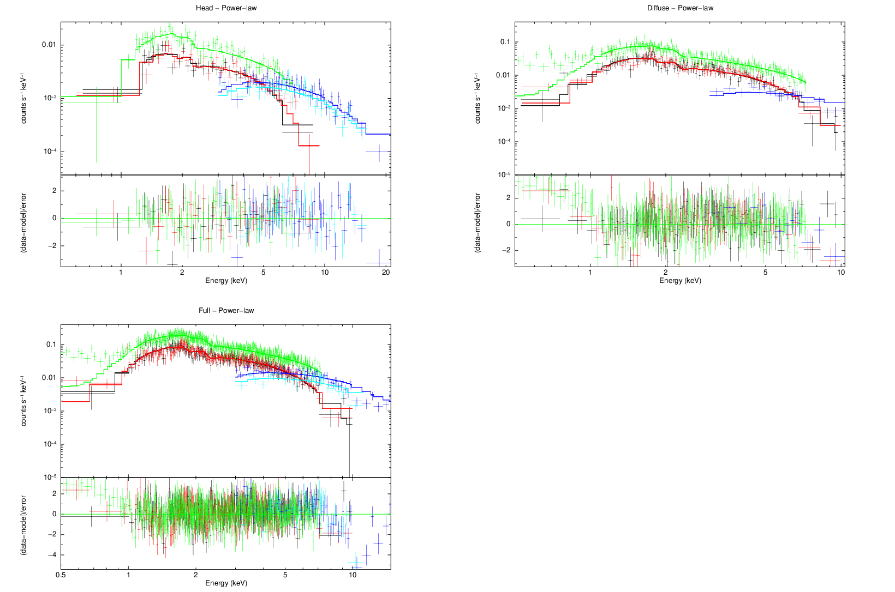模型拟合 / 应用方法
重点章节 / 结果段落怎么读
建议重点查看的图表
关键图表逐图导读
论文原图 / 可嵌入图片
图注：The joint \xmm\ and \(\nustar\) spectra for the Head” (top),Diffuse” (middle), and Full” (bottom) \(\nustar\) regions, fitted with the absorbed power-law model as described in the text. Black, red, and green spectra correspond to MOS1, MOS2, and pn, respectively; blue and cyan correspond to the \(\nustar\) FPMA and FPMB spectra. Note that theDiffuse'' fit omitted poor data from FPMB. The regions are shown in Figure \(\ref{fig:coord+regs},\) and the spectral parameters for these regions are summarized in Table \(\ref{tab:data}.\)
对应解读：“Head”区域联合谱图；模型拟合第一层区域谱拟合；关键图表逐图导读图 3。
入选理由：这是直接检验西侧 Head 非热硬 X 射线是否延伸到约 30 keV 的核心图，包含 XMM-Newton 与 NuSTAR 联合谱、吸收幂律模型以及不同仪器数据点，可用于判断硬尾、跨仪器一致性和拟合残差，比单纯成像图更直接支撑 Γ=1.55±0.07 的关键结论。
来源与置信度：\(arxiv_source\)；high；\(arxiv_source\) / \(W50_ApJ_Accepted_arxiv.tex\):figure[6]
Fig02
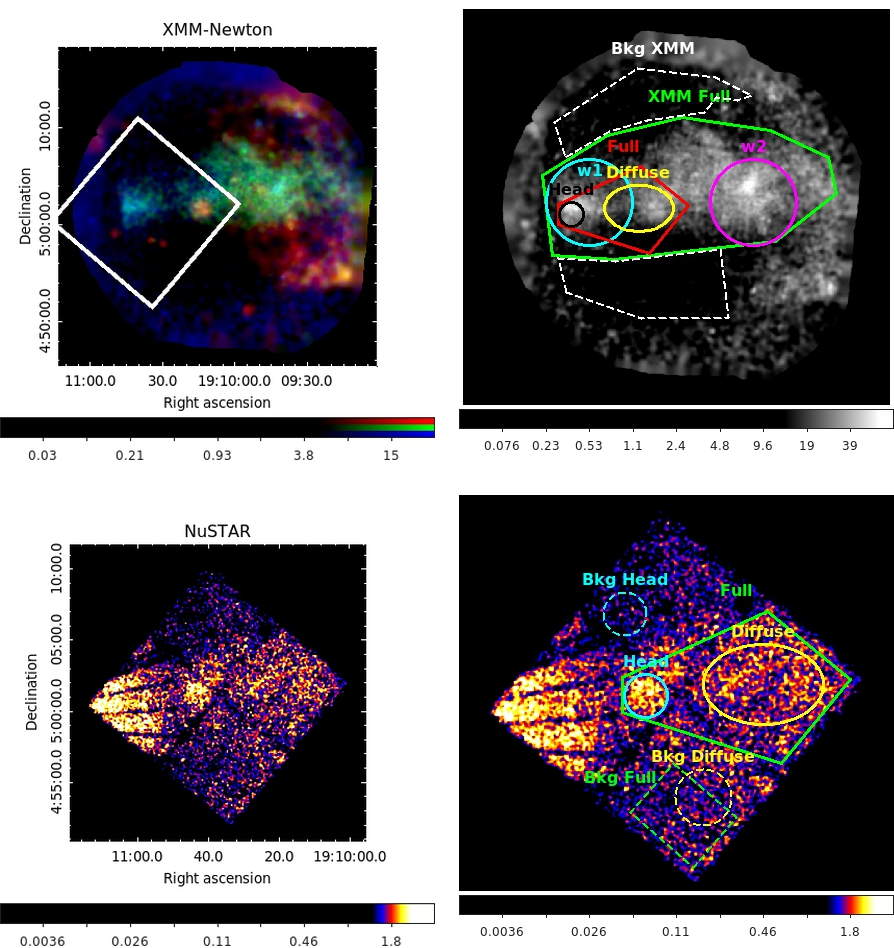
图注：These images illustrate the FoV, extent of emission, and regions being studied here. [Top Left] A Red-Green-Blue image of W50's western lobe via \xmm\ with the \(\nustar\) FoV superimposed in white. Red: 0.5--1.0~keV, Green: 1.0--2.0~keV, Blue: 2.0--12.0~keV. [Top Right] Depiction of all named regions analyzed in this work with \xmm\ data, background extraction area in white. [Bottom Left] \(\nustar\) FPMA detector image illustrating its full FoV for comparison with \xmm\ above. [Bottom Right] Region selections for \(\nustar\) extraction and analysis are depicted with solid lines while the corresponding background extraction regions use dotted lines of the same color.
对应解读：区域定义图；模型拟合中关于谱提取区域、背景区域和区域混合系统误差的讨论；关键图表逐图导读图 2。
入选理由：该图明确给出 XMM 与 NuSTAR 的视场、Head/Diffuse/Full 等分析区域以及对应背景区，是理解所有谱拟合、通量和光子指数结果的前提；对扩展源而言，区域和背景选择直接决定硬尾显著性与谱梯度可信度。
来源与置信度：\(arxiv_source\)；high；\(arxiv_source\) / \(W50_ApJ_Accepted_arxiv.tex\):figure[2]
Fig01

图注：Multi-wavelength image of the W50 nebula. Red: Radio \(\citep{1998AJ....116.1842D},\) Yellow: Optical \(\citep{2007MNRAS.381..308B},\) Green: Soft X-rays (0.5--1~keV), Cyan: Medium energy X-rays (1--2~keV), Magenta: Hard X-ray emission (2--12~keV). The eastern lobe and northern shell shown reflect previously published \xmm\ data \(\citep{Safi-Harb_2022, 2024ApJ...975L..28C}.\) The western lobe X-ray image highlights the \xmm\ data presented in this work, revealing a sharp boundary referred to as the Head'' at $\sim$17$^{\prime}$ (26.5 pc at an assumed distance of 5.5~kpc) west of SS~433. This region mimics the easternHead'' region counterpart detected 18$^{\prime}$ (29~pc) east of SS~433. Sky coordinates are shown in RA and Dec (J2000), and the compass indicates the image orientation (N for North to the top and W for West to the right). The faint dashed circle marks the approximate \xmm\ field of view of the western-lobe observation shown in the top-left panel of Figure~\(\ref{fig:coord+regs}.\)
对应解读：多能段 X 射线图像；东西侧 Head 对称性比较；关键图表逐图导读图 1。
入选理由：该多波段全局图展示 W50 西侧 Head 在 SS 433 西侧约 17 arcmin 的位置，并与东侧 Head 对应结构进行空间比较，最能支撑日报中关于东西两侧相似硬结点和喷流驱动对称性的解读。
来源与置信度：\(arxiv_source\)；high；\(arxiv_source\) / \(W50_ApJ_Accepted_arxiv.tex\):figure[1]
Fig09
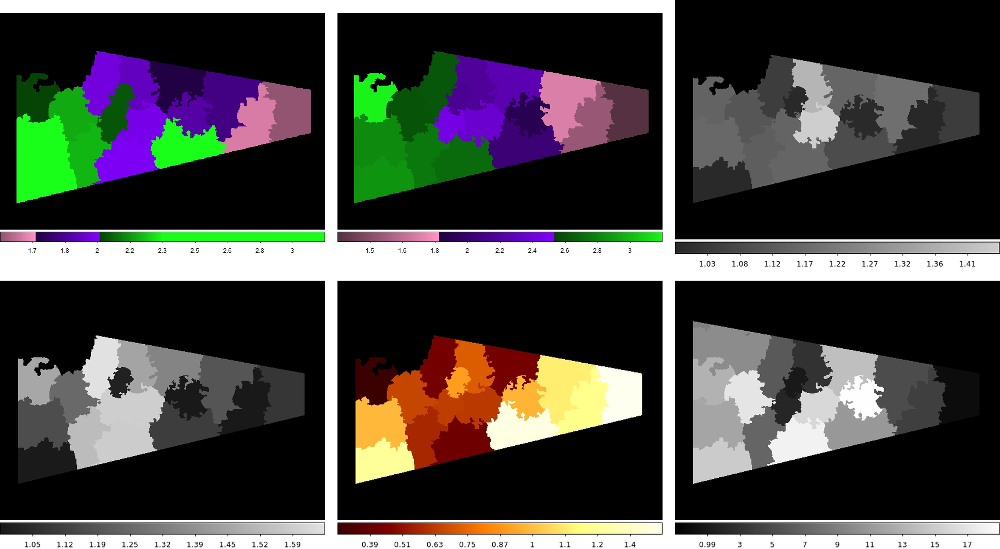
图注：$\Gamma$ when $N_H$ is allowed to vary.
对应解读：光子指数随空间变化和吸收退化的检查；模型拟合第二层空间谱演化拟合。
入选理由：该图展示在允许 NH 自由变化时得到的 Γ 分布，是判断西侧谱软化趋势是否稳健、是否可能由吸收变化或拟合退化造成的重要诊断，直接对应日报对 Γ 从 Head 到 w2 变软及系统误差的关注。
来源与置信度：\(arxiv_source\)；high；\(arxiv_source\) / \(W50_ApJ_Accepted_arxiv.tex\):figure[9]
Fig05
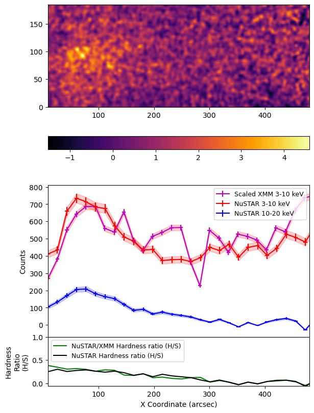
图注：\(\nustar\) spatial profiles (middle) around the ``Head'' region (top) and the hardness ratio (bottom). Binning was set to 8 pixels.
对应解读：NuSTAR 硬 X 射线形态、Head 附近亮度剖面和硬度比；建议重点查看的模型形态剖面或亮度分布。
入选理由：该图把 Head 区域的 NuSTAR 空间剖面与硬度比放在一起，可检查硬 X 射线是否集中在结点状区域、是否存在沿喷流方向的硬度变化，比单张图像更能约束硬辐射的空间来源。
来源与置信度：\(arxiv_source\)；high；\(arxiv_source\) / \(W50_ApJ_Accepted_arxiv.tex\):figure[5]
Fig04
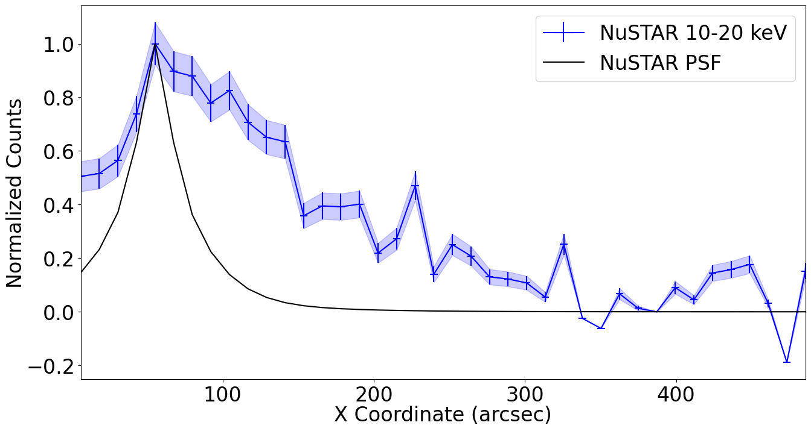
图注：Spatial profile along the jet for the 10--20~keV \(\nustar\) image compared to 12--20~keV \(\nustar\) effective PSF. While the difference is less pronounced than in the \xmm\ case, the extent relative to the PSF is still evident. Binning was set to 5 pixels.
对应解读：硬能段 NuSTAR 空间剖面；硬 X 射线是否为扩展源而非 PSF 或背景效应的检查。
入选理由：该图将 10--20 keV NuSTAR 沿喷流方向剖面与有效 PSF 比较，直接检验硬 X 射线发射是否空间延展；这对确认硬尾来自 W50 西侧喷流结构而非点源或仪器 PSF 尾部非常关键。
来源与置信度：\(arxiv_source\)；high；\(arxiv_source\) / \(W50_ApJ_Accepted_arxiv.tex\):figure[4]
强相关工作
这篇工作应放在 SS 433/W50 东侧喷流的 X 射线和 \(\gamma\) 射线研究背景下阅读。东侧硬 X 射线结点、TeV 辐射和喷流-星云相互作用已经提示 W50 能在远离中心源处加速粒子；本文的西侧结果提供了对称性检验。建议检索关键词包括“SS 433 W50 eastern jet hard X-ray NuSTAR”、“SS 433 W50 TeV HAWC HESS”、“microquasar jet particle acceleration synchrotron”。
相关张力主要在于辐射机制和 PeVatron 解释。硬 X 射线同步辐射强烈支持超高能电子，但 TeV 到更高能的 \(\gamma\) 射线究竟由电子反康普顿产生，还是由相对论质子与气体相互作用产生，并不只靠 X 射线谱就能解决。还应检索“SS 433 PeVatron leptonic hadronic models”、“W50 gamma-ray morphology”、“jet termination shock in-situ acceleration”。若未来 \(\gamma\) 射线形态与 X 射线结点不重合，或者 TeV 谱要求过高的电子能量和过低磁场，当前以同步辐射电子为主的解释就需要修正。
相似工作：
- https://arxiv.org/abs/2606.07452
- https://arxiv.org/pdf/2606.07452
基础理论 / 方法工作：
- https://ui.adsabs.harvard.edu/abs/1979Natur.279..703M/abstract
- https://ui.adsabs.harvard.edu/abs/1980ARA%26A..18..321M/abstract
- https://ui.adsabs.harvard.edu/abs/2018Natur.562...82A/abstract
相反观点 / 张力线索：
（未提供）
3. Direct simulations of very high energy cosmic ray acceleration in 3D MHD model of a compact star cluster
- 来源：arXiv / astro-ph.HE
- 链接：https://arxiv.org/abs/2606.06731v1
- 作者：M. E. Kalyashova, A. M. Bykov, D. V. Badmaev
- 评分：novelty 7/10，importance 8/10，relevance 9/10，final 9.05/10
- 推荐理由：3D MHD plus test-particle simulations of cosmic-ray acceleration in young massive star clusters, motivated by gamma/X-ray detections and reaching hundreds of TeV, are directly relevant to Galactic CR accelerators and PeVatron candidates.
中文题目：在致密年轻星团三维磁流体模型中直接模拟甚高能宇宙线加速
做了什么：这篇论文用三维磁流体力学模拟和测试粒子轨道积分，研究年轻致密大质量星团内部的宇宙线质子能否被多恒星风终止激波、湍流压缩和稀疏结构加速到甚高能。作者用开源代码 PLUTO 建立星团核心内的速度、密度和磁场结构，并用粒子模块同时跟踪带电粒子运动。主要结论是：在相邻 O 星风泡互相挤压的终止激波附近，质子可被加速到数百 TeV；若星团核心内同时有年轻超新星遗迹膨胀，粒子在不到约百年内达到 \(\gtrsim 100\,\mathrm{TeV}\) 的效率会显著提高。
为什么重要：银河宇宙线的传统候选源是超新星遗迹，但近年 TeV 与 X 射线观测不断发现年轻大质量星团和恒星风泡具有非热辐射。若星团核心本身可以把质子推到百 TeV 以上，它们就可能是银河 \(\mathrm{PeV}\) 宇宙线源谱中的重要组成，而不是超新星遗迹的附属环境。本文的重要性在于它不是只用一维扩散模型或参数化加速时间，而是把三维星风碰撞、磁场扰动和粒子轨道放在同一个数值框架中检查。
理论 / 观测 / 仪器方法价值：对理论而言，这项工作给出了年轻大质量星团中多激波随机加速和快速一阶激波加速的直接数值例子，可用来校准解析模型中的扩散系数、逃逸时间和最大能量估计。对观测而言，它提示 TeV–PeV 伽马射线源与星团核心、恒星风终止激波和嵌入式年轻超新星遗迹之间可能存在可检验的空间关联。对方法而言，PLUTO 的 MHD 加测试粒子方案提供了一条从流体结构到粒子能谱和空间分布的闭环路径。
为什么应该关注：如果你关心银河宇宙线源、\(\gamma\) 射线扩展源、年轻星团反馈或多信使高能天体物理，这篇文章值得看，因为它把“星团是否能成为百 TeV 加速器”这个问题推进到三维动力学层面。它也提醒读者：观测到的星团 TeV 辐射不一定只是在星团外部风泡中产生，核心内多个恒星风终止激波和年轻超新星遗迹可能已经足够强。
展开详细解读：文章讲解、背景、理论、重点章节、图表与相关工作
文章详细讲解
科学问题：年轻致密大质量星团包含许多 O 型星、B 型星和 Wolf-Rayet 星，它们在半径约 \(\mathrm{pc}\) 量级的核心内注入高速强星风。多个恒星风相互碰撞会形成终止激波、接触间断、长波长压缩区和强湍流磁场。论文要回答的是：这些真实三维结构是否能在星团核心内把质子直接加速到百 TeV 甚至更高，而不必完全依赖单个超新星遗迹的标准扩散激波加速图像。
作者怎么做：作者使用开源 MHD 代码 PLUTO 构造年轻大质量星团核心的三维磁流体环境。MHD 部分给出气体速度 \(\mathbf{u}\)、密度 \(\rho\)、压力 \(P\) 和磁场 \(\mathbf{B}\) 的时空分布；粒子部分把质子作为测试粒子，求解相对论带电粒子在电磁场中的运动方程。测试粒子近似意味着粒子从流体中获得能量，但不反过来修改激波结构和磁场，这适合探索加速可行性和相空间分布，但还不是完整的非线性宇宙线-MHD 模型。
关键结果：在只有多颗大质量恒星风的模型中，质子主要在 O 星终止激波附近被有效加速，尤其是当一颗恒星的激波被邻近恒星风激波包围时，粒子可以在多个压缩区之间往返，获得类似多激波加速和随机剪切/压缩加速的增益。模拟显示质子能量可达数百 TeV。作者还加入一个年轻超新星遗迹在星团核心内膨胀的情形，发现加速明显更快：\(\gtrsim 100\,\mathrm{TeV}\) 的能量可在 \(\lesssim 100\,\mathrm{yr}\) 内获得。这一结果说明星团内超新星与星风背景的耦合可能是极高能粒子的高效工厂。
局限和下一步：本文的核心价值是直接轨道模拟，但测试粒子方法没有包含宇宙线压力对激波的反作用、湍流由粒子流不稳定性自洽放大、粒子碰撞损失和完整辐射转移。最大能量也会受网格分辨率、注入条件、边界逃逸、磁场初始条件和星团成员分布影响。下一步应把粒子反馈、能量依赖逃逸、\(pp\) 碰撞产生的 \(\gamma\) 射线和中微子辐射，以及与 H.E.S.S.、HAWC、LHAASO、CTA 预期观测的二维形态联系起来。
背景知识
年轻大质量星团是银河盘中机械能注入最强的环境之一。几十颗 O 星和 WR 星的星风速度可达 \(10^3\,\mathrm{km\,s^{-1}}\) 量级，质量损失率从 \(10^{-7}\) 到 \(10^{-5}\,M_\odot\,\mathrm{yr^{-1}}\) 不等。每颗星风都会在与外部压力平衡处形成终止激波；在致密星团核心内，这些激波并不孤立，而是彼此靠近、相互挤压，形成高度非定常的多激波网络。
银河宇宙线起源的经典框架把超新星遗迹视为主源，理由是能量预算合适、激波速度高、扩散激波加速自然产生近似幂律谱。但这个图像长期面临两个问题：第一，单个中年超新星遗迹是否能稳定达到 \(\mathrm{PeV}\) 量级仍有争议；第二，越来越多 TeV 扩展源与大质量星团、OB 星协和超级泡相关，而不是与孤立壳型超新星遗迹一一对应。
观测背景正在改变这个问题的权重。H.E.S.S. 对 Westerlund 1、Cygnus Cocoon 等区域的观测，Fermi-LAT 对 GeV 扩展辐射的测量，以及 HAWC、LHAASO 在百 TeV 能段发现的银河源，都推动人们重新审视星团和超级泡的宇宙线加速能力。若星团风泡能长期注入湍流并储存粒子，其时间积分能量可能超过单个遗迹的瞬时贡献。
这个领域的常见误区有两个。一个是把星团风简化成一个球对称集体风，然后只讨论大尺度风泡外壳；但在年轻致密星团中，核心内单星风终止激波和局部磁场结构可能才是早期加速的关键。另一个是把所有 TeV 辐射都直接解释为电子逆康普顿辐射或所有都解释为强子 \(pp\) 辐射；实际上需要结合气体分布、谱形、能量依赖形态和 X 射线约束来区分。本文的三维轨道模拟正是对这些简化图像的补充。
基础理论 / 方法脉络
基本物理图像从带电粒子在磁化等离子体中的运动开始。若质子回旋半径 \(r_{\rm L}\) 小于系统尺度，它会被磁场束缚并随湍流和激波散射；每次穿过速度不连续或压缩区，粒子在局部流体参考系之间转换能量。单个强激波给出一阶费米加速，多激波和大尺度压缩/稀疏结构则叠加随机加速与空间再加速。
在年轻星团核心中，恒星风的动压 \(\rho v_{\rm w}^2\) 与周围热压、湍流压和邻近风动压平衡，形成终止激波。由于恒星间距可能与终止激波半径同阶，粒子并不只看到一个平面激波，而是看到弯曲、移动、相互碰撞的激波面。这样的几何会改变逃逸路径和能量增益率，也使解析的一维扩散激波模型不够充分。
本文的模型假设是先用理想或近似理想 MHD 描述背景流体，再在该背景中积分测试质子轨道。关键量包括局部磁场 \(\mathbf{B}\)、流体速度 \(\mathbf{u}\)、电场 \(\mathbf{E}\simeq-\mathbf{u}\times\mathbf{B}/c\)、粒子动量 \(\mathbf{p}\)、洛伦兹因子 \(\gamma\)、能量 \(E\) 和位置 \(\mathbf{x}\)。粒子能否达到高能，主要由加速时间、逃逸时间、系统年龄和损失时间之间的竞争决定。
常见退化关系在于：较强磁场可减小扩散系数并提高束缚能力，但也会改变粒子回旋尺度与数值网格的关系；较高激波速度提高能量增益，但若逃逸边界太近，最大能量仍受限；更强湍流既增强散射也可能加快空间扩散。系统误差还包括星团成员位置、星风质量损失率、初始磁场拓扑、数值耗散、粒子注入谱和边界条件。读本文时要把“达到数百 TeV”理解为在给定 MHD 背景和注入方案下的动力学可行性，而不是所有真实星团都会产生同样能谱。
公式与推导
第一步是星风机械能注入。对一颗质量损失率为 \(\dot M\)、终端风速为 \(v_{\rm w}\) 的大质量星，机械光度为
这里 \(L_{\rm w}\) 决定可供加速粒子的能量库，\(\dot M\) 和 \(v_{\rm w}\) 是星风参数。多颗星时总机械功率近似为 \(L_{\rm cl}=\sum_i L_{{\rm w},i}\)，但空间分布不能简单等效为一个中心源。
第二步是终止激波位置的量级估计。若星风动压与外部压力 \(P_{\rm ext}\) 平衡，则
这里 \(R_{\rm ts}\) 是终止激波半径。星团核心中 \(P_{\rm ext}\) 包含热压、邻近星风冲压和湍流压，因此 \(R_{\rm ts}\) 会随方向和时间变化。
第三步是背景等离子体的理想 MHD 电场。若电阻可忽略，局部电场为
\(\mathbf{u}\) 是流体速度，\(\mathbf{B}\) 是磁场，\(c\) 是光速。这个式子说明粒子能量变化来自粒子速度相对流体的漂移以及流场、磁场的空间时间变化。
第四步是测试粒子的相对论运动方程。质子电荷为 \(q\)、静质量为 \(m\)，则
其中 \(\gamma=(1+p^2/m^2c^2)^{1/2}\)。PLUTO 粒子模块实质上在 MHD 网格给出的 \(\mathbf{E}\) 和 \(\mathbf{B}\) 中积分这组方程。
第五步是能量变化率。粒子总能量为 \(E=\gamma mc^2\)，有
磁力项 \(q\mathbf{v}\times\mathbf{B}/c\) 不直接做功；做功来自感生电场。激波和压缩区通过改变 \(\mathbf{u}\) 与 \(\mathbf{B}\) 的结构，使粒子在多次散射中获得净能量。
第六步是束缚条件。相对论质子的拉莫尔半径为
若 \(r_{\rm L}\ll L\)，其中 \(L\) 是激波间距或星团核心尺度，粒子可被局域结构束缚并多次加速；若 \(r_{\rm L}\sim L\)，逃逸开始限制最大能量。
第七步是扩散激波加速的参考时间尺度。对上游速度 \(u_1\)、下游速度 \(u_2\) 和扩散系数 \(\kappa_1,\kappa_2\)，常用估计为
这不是三维多激波模拟的全部，但它提供了判断数值结果是否合理的基准：更快激波、更小 \(\kappa\) 会缩短 \(t_{\rm acc}\)。
第八步是最大能量的 Hillas 型约束。若加速区尺度为 \(L\)、特征速度为 \(u\)、磁场为 \(B\)，则量级上
其中 \(\eta\lesssim 1\) 表示几何、散射和逃逸效率。本文得到百 TeV 到数百 TeV 的结果，本质上是在三维 MHD 背景中检验上述约束在星团核心和嵌入式超新星遗迹条件下是否能实现。
第九步是从粒子分布连接到可能的观测。若强子与气体发生 \(pp\) 碰撞，伽马射线发射率可粗略写为
这里 \(n_{\rm gas}\) 是气体数密度，\(N_p\) 是质子谱，\(d\sigma_{pp\rightarrow\gamma}/dE_\gamma\) 是微分产生截面。虽然本文重点是加速和空间分布，这个式子说明为什么粒子位置与气体分布同样影响 TeV 形态。
模型拟合 / 应用方法
这类工作的“拟合”不一定表现为对观测数据的传统最小二乘，而更多是数值模型参数与粒子输出之间的映射。可调量包括星团半径、恒星数目和位置、每颗星的 \(\dot M\) 与 \(v_{\rm w}\)、初始磁场强度和方向、边界条件、粒子注入位置、注入能量、注入时间以及是否加入星团内年轻超新星遗迹。输出量包括粒子能谱 \(dN/dE\)、最大能量 \(E_{\max}(t)\)、空间分布和加速热点。
若要与观测拟合，需要把模拟得到的质子分布转成 \(\gamma\) 射线或中微子通量。常用似然可基于能谱数据点、二维计数图或多能段形态图构造。拟合量不仅是谱指数和归一化，还包括气体模板、源扩展半径、能量依赖扩散长度和背景模型。对 Cherenkov 望远镜或广域水 Cherenkov 阵列，点扩散函数、能量重建偏差和背景扣除方法会直接影响“星团核心辐射”与“外部弥散晕”的区分。
参数退化很明显。较高的宇宙线加速效率可以被较低的气体密度补偿，较强磁场可以被较低扩散系数参数化，较年轻的注入年龄可以与较慢扩散相互抵消。若只看积分谱，强子 \(pp\) 模型和电子逆康普顿模型也可能部分退化；必须加入 X 射线同步辐射上限、分子云分布、GeV 到百 TeV 谱连续性和空间形态才能打破。
模型可能失败的地方也应明确。测试粒子近似在宇宙线能量密度接近流体热能或磁能时不再可靠，因为宇宙线压力会改变激波压缩比并激发磁场放大。数值网格若不能解析小尺度湍流，扩散和能量增益可能由数值耗散控制。粒子统计不足会导致高能尾部噪声，边界逃逸设置会改变 \(E_{\max}\)。因此读者应关注作者是否展示了不同注入、不同时间、不同位置下的稳健性，而不是只看最高能粒子个例。
重点章节 / 结果段落怎么读
第一，数据/数值设置部分应重点读星团模型如何建立：恒星数量、类型、空间分布、星风参数、计算盒大小、边界条件、网格分辨率和初始磁场。这里决定了终止激波间距、湍流水平和粒子束缚条件，是后面所有能谱结果的物理基础。
第二，MHD 结果部分应看速度、密度和磁场结构，而不是只看文字结论。读者应判断是否形成了多个相互靠近的终止激波、压缩壳层和低密度通道，以及这些结构在星团核心中是否足够持久。粒子加速效率很大程度上来自这些非球对称结构。
第三，粒子轨道和能谱部分是论文核心。应关注粒子注入能量、注入位置、积分时间、粒子数和能谱统计方法。特别要看高能端是否由少数粒子主导，\(E_{\max}\) 随时间增长是否平滑，以及空间分布是否与激波网络一致。
第四，嵌入式年轻超新星遗迹部分需要单独读。这里的物理不同于纯星风模型：超新星激波速度更高，且在星团核心的预扰动磁化介质中传播，可能导致更短的加速时间。读者应比较有无超新星时的 \(E_{\max}(t)\)、粒子谱形和加速热点位置。
第五，讨论和结论部分应检查作者如何把结果外推到真实星团和观测源。重点是他们是否区分了“质子可被加速到百 TeV”与“可解释某个 TeV 源全部通量”这两个层级，以及是否讨论逃逸粒子在星团外气体中的二次辐射。
建议重点查看的图表
-
星团核心的三维或二维切片图：看密度、速度和磁场的空间结构，尤其是多颗 O 星终止激波是否相互靠近，是否存在强压缩区和低密度通道。
-
磁场强度或流速分布图：看高 \(B\) 区和高速剪切区是否与加速热点重合；若只有密度图而缺乏磁场诊断，最大能量解释会变弱。
-
单个或多个代表性粒子轨道图：看粒子是否在多个激波之间反复穿越，而不是一次性被局部电场数值加速；轨道与能量随时间曲线应相互对应。
-
粒子能谱图：看 \(dN/dE\) 的高能尾、谱斜率、截止能量和统计误差。特别注意最高能端是否由少数粒子造成，以及是否展示不同时间的谱演化。
-
\(E_{\max}(t)\) 或能量增长曲线：看百 TeV 能量是在多长时间内达到；纯星风模型与含年轻超新星遗迹模型的时间尺度差异是关键结论。
-
粒子空间分布图：看高能粒子集中在星团核心、终止激波附近，还是沿开口通道逃逸。若未来用于解释 \(\gamma\) 射线形态，这类图比积分谱更重要。
-
稳健性或参数比较表：看不同磁场、星风参数、注入位置和是否加入超新星时结果是否仍能达到百 TeV。
关键图表逐图导读
图 1：通常应对应数值模型几何或星团初始设置。横纵轴可能是以 \(\mathrm{pc}\) 为单位的空间坐标，点或标记代表大质量恒星位置，颜色可能表示密度或压力。读图时要看恒星间距与风终止激波尺度是否同阶；若间距远大于激波半径，多激波加速效率就会下降。
图 2：应重点查看 MHD 切片，例如密度、速度模或磁场强度。颜色条的动态范围很关键：高密度壳和低密度腔会决定 \(pp\) 辐射和逃逸路径，高速流与磁场增强区会决定加速率。读图陷阱是把漂亮的湍流纹理等同于有效散射；真正需要结合粒子轨道和能量增长判断。
图 3：若展示粒子轨道或粒子空间分布，坐标轴一般是 \(x\)、\(y\)、\(z\) 或投影半径，颜色可能编码粒子能量。应看高能粒子是否沿终止激波和压缩区分布，还是随机散布。若高能粒子只出现在边界附近，要警惕边界条件或数值电场导致的伪加速。
图 4：能谱图一般以 \(E\) 为横轴，\(dN/dE\)、\(E^2dN/dE\) 或归一化粒子数为纵轴。模型线或不同颜色可能代表不同时间、不同注入或不同场景。关键读法是比较谱斜率、截止位置和高能端粒子统计；不要只引用最高能点，因为最高能点可能统计不稳定。
图 5：能量随时间曲线或 \(E_{\max}(t)\) 是验证“\(\lesssim 100\,\mathrm{yr}\) 达到 \(\gtrsim 100\,\mathrm{TeV}\)”的核心。横轴为时间，纵轴为粒子能量或最大能量。若曲线呈阶跃式增长，通常表示粒子经历了少数强激波穿越；若近似平滑，可能对应持续散射加速。需要比较纯星风与含超新星遗迹两种场景。
图 6：如果有参数比较或含超新星遗迹的结构图，应看超新星激波与星风终止激波的相对位置。模型线或颜色图应显示更强压缩、更高速度和更大的加速热点。读图陷阱是把超新星贡献与星团长期贡献混为一谈；前者可能给出快速高能尾，后者决定长期注入和粒子储存。
论文原图 / 可嵌入图片
Fig05
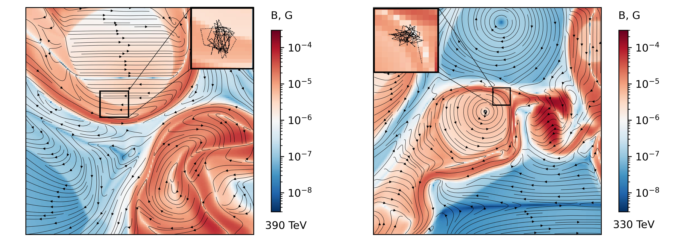
图注：Examples of the energy gain regions of particles accelerated to $>$ 300 TeV. The magnetic field geometry is shown with streamlines. Insets show the trajectories of accelerated particles with energies 390 TeV (upper figure) and 330 TeV (lower figure) during the acceleration process.
对应解读：对应“建议重点查看的图表”第3项代表性粒子轨道、第5项能量增长/加速热点，以及“关键图表逐图导读”中关于粒子是否在多个激波、压缩区和磁场结构附近获得能量的解读。
入选理由：这张图直接展示了被加速到>300 TeV粒子的能量增益区域、磁场流线和粒子轨道，是验证论文核心物理机制的最关键证据：高能粒子是否确实在星团核心的复杂磁场和多激波环境中反复穿越并增能，而不是仅由单个最高能点或数值边界造成。
来源与置信度：\(arxiv_source\)；high；\(arxiv_source\) / jasr-particles-arxiv.tex:figure[5]
Fig07
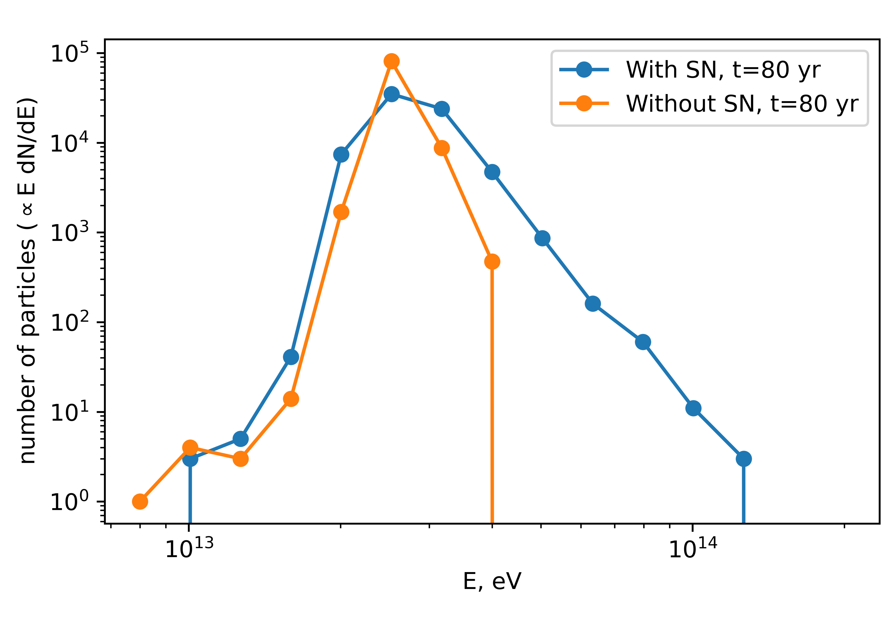
图注：The comparison of the particle spectra after 80 years of simulation for the clusters with and without a supernova event.
对应解读：对应“建议重点查看的图表”第4项粒子能谱、第5项纯星风模型与含年轻超新星遗迹模型的时间尺度差异，以及“关键图表逐图导读”图5、图6关于≤100 yr达到≥100 TeV的核心判断。
入选理由：该图直接比较80年后有无超新星事件时的粒子谱，是支撑论文最重要结论之一的图：星团内年轻超新星遗迹可显著加快百TeV粒子产生。相比单独积分谱，它更能体现两种物理场景的差异。
来源与置信度：\(arxiv_source\)；high；\(arxiv_source\) / jasr-particles-arxiv.tex:figure[7]
Fig06
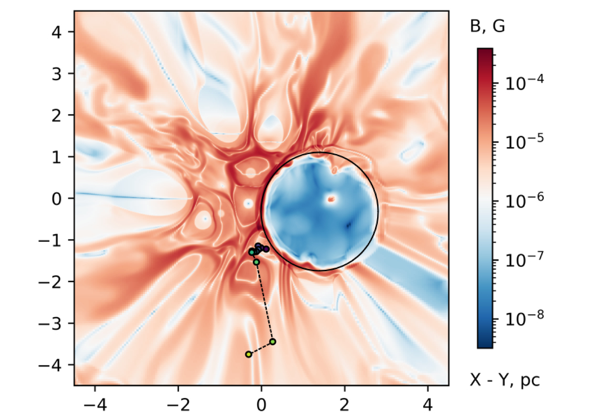
图注：Magnetic field map during a SN event in YMSC. An approximate position of SNR shock is indicated with a black circle. An accelerated particle trajectory is shown with a dashed black line.
对应解读：对应“建议重点查看的图表”第2项磁场强度/流速结构、第3项粒子轨道，以及“关键图表逐图导读”图6关于超新星激波与星风终止激波相对位置的说明。
入选理由：这张图给出超新星事件期间的磁场图、SNR激波大致位置和加速粒子轨迹，可把Fig07中的谱增强与具体空间结构联系起来，说明快速加速发生在超新星激波与星团磁化湍流环境耦合的区域。
来源与置信度：\(arxiv_source\)；high；\(arxiv_source\) / jasr-particles-arxiv.tex:figure[6]
Fig01
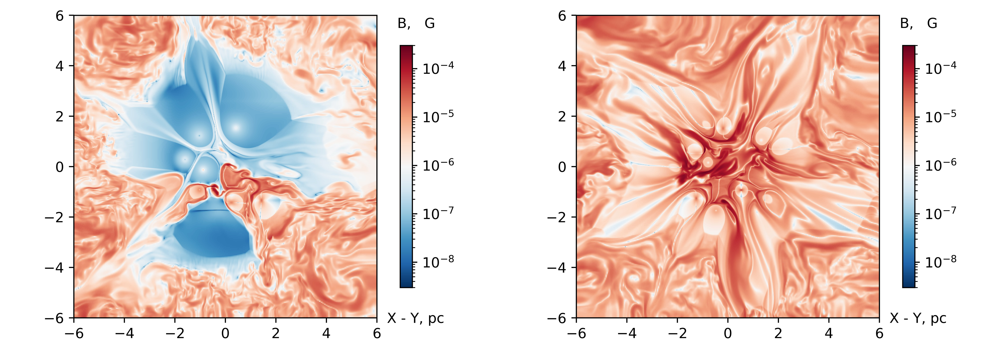
图注：Magnetic field map of the central Oxy-plane of the compact star cluster and its surroundings for the case (1) (12 O-stars + 8 WR-stars) – upper panel, and (2) (48 O-stars + 2 WR-stars) – lower panel.
对应解读：对应“建议重点查看的图表”第1项星团核心二维/三维切片、第2项磁场分布图，以及“关键图表逐图导读”图1、图2关于MHD结构和不同星团成员配置的解读。
入选理由：该图展示两种星团模型在中心Oxy平面的磁场分布，是理解后续粒子加速背景场的基础。它能显示星风相互作用形成的磁场结构和潜在压缩区，也能比较不同O星/WR星组合对加速环境的影响。
来源与置信度：\(arxiv_source\)；high；\(arxiv_source\) / jasr-particles-arxiv.tex:figure[1]
Fig02
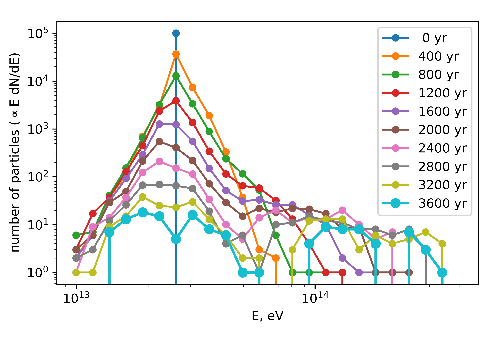
图注：Time dependence of the spectrum of accelerated particles for the case (1). Particles were injected at $t=0$ with energy $E=30~\rm{TeV}$. As the spectral bin width $\propto E$, the number of particles $\propto E ~dN/dE$.
对应解读：对应“建议重点查看的图表”第4项粒子能谱和第5项能量随时间/谱演化，以及“关键图表逐图导读”图4关于不同时间能谱、高能尾和截止能量的读法。
入选理由：这张图展示case (1)中加速粒子谱随时间的演化，能直接检验高能尾如何形成、是否随时间持续推进，以及最高能端是否只是瞬时少数粒子造成。它比单一积分谱更适合支撑日报中关于谱演化和统计稳定性的提醒。
来源与置信度：\(arxiv_source\)；high；\(arxiv_source\) / jasr-particles-arxiv.tex:figure[2]
Fig08
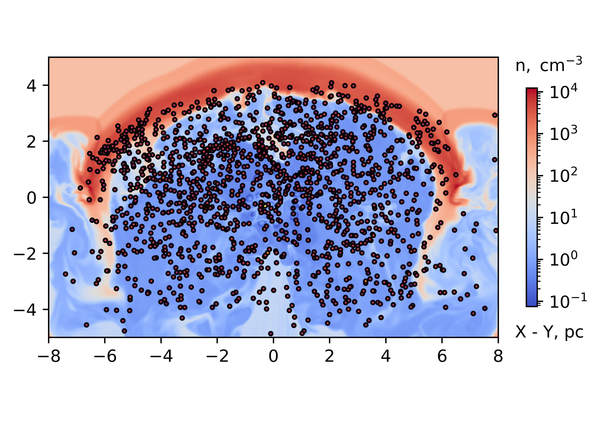
图注：The particles spatial distribution after 2500 years of simulation with shell. Particles do not penetrate the shell and do not escape through the upper bound.
对应解读：对应“建议重点查看的图表”第6项粒子空间分布，以及模型局限段中关于边界逃逸设置会改变Emax和粒子储存的讨论。
入选理由：该图展示2500年后带壳层情形下的粒子空间分布，并明确粒子不穿透壳层、不从上边界逃逸。它对理解高能粒子是被困在星团核心/壳层内还是沿通道逃逸很有价值，也能辅助评估未来γ射线形态解释中的空间分布问题。
来源与置信度：\(arxiv_source\)；high；\(arxiv_source\) / jasr-particles-arxiv.tex:figure[8]
强相关工作
这篇工作与年轻大质量星团作为宇宙线源的研究线索直接相连。相似观测对象包括 Cygnus Cocoon、Westerlund 1、Westerlund 2、30 Doradus 以及若干 LHAASO 百 TeV 银河源附近的 OB 星协。可检索关键词包括 “young massive star cluster cosmic ray acceleration”、“stellar wind termination shocks TeV gamma rays”、“Cygnus Cocoon Fermi HAWC”、“Westerlund 1 HESS cosmic rays” 和 “superbubble particle acceleration”。
理论上，它与经典超新星遗迹扩散激波加速并不是简单替代关系，而是把源环境从孤立激波扩展到多激波、湍流和集体风泡。相反或有张力的观点包括：银河宇宙线主要由孤立超新星遗迹贡献；星团 TeV 辐射主要来自电子逆康普顿而非强子 \(pp\)；百 TeV 粒子主要在星团外部风泡壳层而非核心内产生。建议检索 “diffusive shock acceleration supernova remnants PeVatron”、“hadronic leptonic degeneracy TeV star clusters”、“cosmic ray superbubble acceleration Bykov” 等关键词。
相似工作：
- https://arxiv.org/abs/1105.0782
- https://arxiv.org/abs/2103.17137
- https://arxiv.org/abs/1906.03353
基础理论 / 方法工作：
- https://ui.adsabs.harvard.edu/abs/1977DoSSR..234.1306K/abstract
- https://ui.adsabs.harvard.edu/abs/1978MNRAS.182..147B/abstract
- https://ui.adsabs.harvard.edu/abs/1983RPPh...46..973D/abstract
- https://ui.adsabs.harvard.edu/abs/2001SSRv...99..317B/abstract
相反观点 / 张力线索：
- https://arxiv.org/abs/1804.02406
- https://arxiv.org/abs/2106.06405
说明
评分由 LLM 给出初评，再由本地阈值策略过滤；IACT、TeV 伽马射线和高能中微子天文学按重点方向处理。